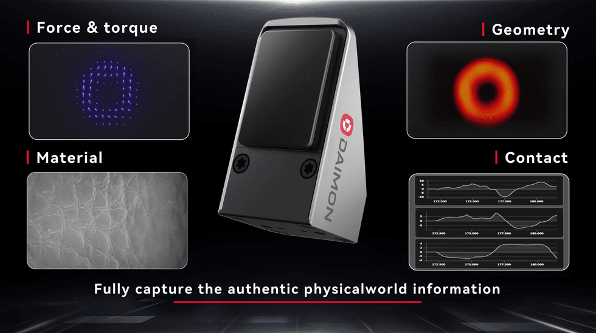
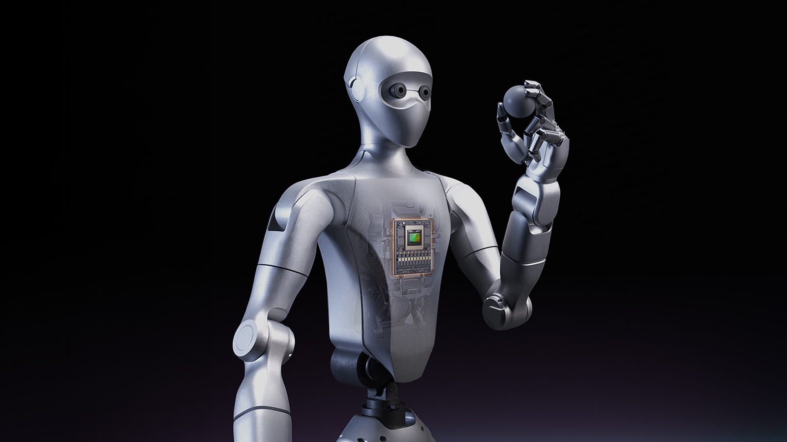

Executive Summary
Over the past year, billions of dollars have flowed into robots' bodies (the hardware) and their brains (the foundation models). Yet the tactile data that lets those robots feel pressure, slip, and texture at their fingertips still draws only capital measured in the millions. Why has capital split so sharply under the same Physical AI umbrella, and does that imbalance really translate into a data bottleneck? Those are the two questions this gap opens up.
There is a structural reason touch has been left out. Vision and language data already flood the internet and can be secured at scale by scraping, but tactile signals are generated only at the moment physical contact happens, which makes crawling impossible from the start. On top of that, a single commercial touch sensor used to cost $5,000 to $10,000, so collection itself was expensive. The twist in this piece is that the price has recently fallen to the $350–$550 range.
So the question narrows to this: does the arrival of cheap tactile collection gear signal a shift in the race to secure "the most expensive modality nobody can see" at scale? But the clue is that cheaper gear does not, on its own, make data accumulate.
Key Numbers
These four numbers are the backbone of this piece. The first two show how sharply capital has tilted and how far sensor prices have fallen; the last two point to the scale of tactile data that is starting to emerge on top of that change.
Sources: Tim Harper · Robotics Center · IEEE Spectrum
Hundreds×
Capital gap
Neura single round $1.4B vs. tactile startup $1.75M
$10K→$350
Touch sensor price
From BioTac class to DIGIT class
1M hours
Daimon-Infinity
Multimodal data, 10K hours open-sourced
1,000+
Tactile pixels per fingertip
Sharpa Wave, standard in NVIDIA reference design
The Capital Gap in Two Numbers
Let me place two numbers side by side. Neura Robotics, the German humanoid company, raised up to $1.4 billion in a single Series C round in the first half of 2026. Around the same time, the pre-seed round Sensetics raised as a company devoted entirely to tactile sensing was $1.75 million. Both sit under the same Physical AI umbrella, yet the two figures are separated by more than three orders of magnitude.
This is not just about Neura. The scale of capital tilting toward building robots' bodies and brains is already overwhelming at the level of individual companies. Figure AI has raised more than $1.9 billion cumulatively and reached a $39 billion valuation, while Physical Intelligence, which builds robot foundation models, took $600 million in its Series B in November 2025. Skild AI closed a $1.4 billion Series C led by SoftBank in January 2026. By Crunchbase's tally, total funding for robotics startups in 2026 reached $18.8 billion, already past the previous peak.
On the other side, the funding raised by companies devoted to tactile sensing is a different order of magnitude entirely. Sensetics at $1.75 million, Contactile — which builds touch sensors for robotic dexterity — at $2.5 million, and China's ViTai Robotics in the range of a few million to a few tens of millions. DAIMON Robotics, profiled by IEEE Spectrum, is a two-and-a-half-year-old startup that has not disclosed a specific figure. A single large round on the body-and-brain side is hundreds of times bigger than the combined funding of all these tactile-focused startups.
The hook — "billions for the body and brain, still only millions for the sense at the fingertips" — is not rhetoric but is backed by actual funding data. The catch is that this imbalance in capital allocation is not a matter of investor taste; it comes from the structural nature of touch as a modality.
Why Only Touch Cannot Be Crawled
Half the reason capital skipped over touch lies in the nature of the modality. Vision and language data already exist on the internet. Text, images, and video can be scraped at scale and used for pretraining. Touch is different. Pressure, shear force, slip, and changes in material are generated only at the moment physical contact happens. Data appears only when a robot or a person actually touches something. Because none of it is stockpiled anywhere on the web, crawling is impossible from the start.
The researcher Tim Harper sums up this gap in a single sentence: a better brain demands a better sense. As robot policies grow more refined through VLA or reinforcement learning, contact-level events the camera cannot capture remain the cause of failure. Whether a strawberry is slipping at the fingertips, whether a package seam is catching, whether a bearing ring is turning under the finger — if there is no evidence for it in the sensor stream, the model has no way to reason about it.
Real deployment cases back this up. According to a report from Humanoid, which applied reinforcement learning on an industrial floor, throughput on a machine-tending task rose 42%, the success rate on a handover task climbed from 80% to 98%, and the success rate on bimanual tote handling went from 78% to 99%. As policies improved, most of the failures that remained came from the subtlety of contact. In other words, the smarter the brain you build, the more the absence of tactile data stands out.
Signs the Game Is Shifting
The other half of the reason capital skipped over touch was price. Commercial touch sensors like the old BioTac ran $5,000 to $10,000 apiece. For a robot that needs a sensor on every fingertip, that price was a wall blocking collection itself. But that wall has come down over the past few years. As optical, vision-based touch sensors went mainstream, the GelSight Mini fell to $499, a robotics package to $549, and the DIGIT sensor built in partnership with Meta AI to around $350.
Building your own is even cheaper. The open-source GelSlim family can be self-fabricated for about $122 in materials — roughly a fifth of the commercial robotics package. What stands out is that GelSight partnered with Meta AI to manufacture and distribute the DIGIT sensor commercially. It is a case of a large company directly backing cheap tactile data infrastructure, and it shows that tactile collection is escaping the privilege of a handful of labs.
Market data points the same way. The neuromorphic tactile sensor market is projected to grow from $95 million in 2025 to $520.4 million by 2034, a compound annual rate of 21.5%. Within that market, humanoid hand applications account for the largest share at 38.2%. It is a signal that touch is settling in not as a niche component but as a core building block of the robot hand.
DAIMON and NVIDIA, Two Signals
Once prices came down, two kinds of signal appeared in the first half of 2026. One was startups beginning to mass-produce tactile data directly; the other was the tactile hand being folded into a large platform as a standard component.
4.1DAIMON Stamps Out Touch as a Dataset
DAIMON Robotics builds vision-based touch sensors that pack more than 110,000 effective sensing units into a single fingertip-sized module. Then, in April 2026, it released Daimon-Infinity, a multimodal dataset on the scale of one million hours. It covers more than 80 real-world scenarios and over 2,000 human skills, of which 10,000 hours were open-sourced. Google DeepMind, Northwestern University, and the National University of Singapore are listed as partners.
Founder Professor Michael Yu Wang explains that converting tactile information into a visual image format lets it integrate naturally into existing vision AI frameworks. That idea leads to the concept of extending VLA (Vision-Language-Action) into VTLA (Vision-Tactile-Language-Action), which folds in touch. In effect, touch is redefined not as a "difficult, separate signal" but as a modality that can be processed with the same grammar as vision.

4.2NVIDIA Makes the Tactile Hand a Default
The Isaac GR00T reference humanoid robot NVIDIA released is even more symbolic. On top of a Unitree body and Jetson Thor compute, it mounts the Sharpa Wave five-finger tactile hand. That hand carries more than 1,000 tactile pixels per fingertip. The key point is that this tactile hand went in not as an option but as a default building block of the open reference design. A researcher designing a robot for the first time ends up holding tactile sensing in hand without a separate decision.

NVIDIA stressed that it leaves ownership of the training data and telemetry gathered with this reference robot to the researcher. Once tactile data begins pouring out of standard hardware at scale, the question of data sovereignty — who owns that data and accumulates it at scale — follows immediately. The moment touch becomes the standard, the focus of competition shifts from the sensor to the data.
Cheaper Gear Does Not Mean More Data
Here we need to step back. Sensor prices falling into the low hundreds of dollars is an event that lowered the barrier to entry, not one that makes data accumulate on its own. Vision and language only needed a cheap camera and a web crawler to scrape data that already existed. Touch still accumulates one hour at a time only when someone actually touches, pushes, and grips in the field. Cheaper gear means there are more hands to record that contact — it does not mean the contact itself increases.
The bigger problem comes next. Labeling what a collected tactile signal means, aligning signals from different sensors and robots onto the same coordinates, and the quality control that separates noise from valid signal are not solved by falling prices. If anything, the more cheap sensors there are, the more disparate tactile data pours in, and refining it into a trainable asset becomes the new bottleneck.
As Pebblous noted at the end of June, if the decisive battleground of Physical AI is behavioral data, then touch is the least-digitized channel within that behavior. The arrival of cheap sensors is only the first button undone toward opening that channel; securing it at scale and securing its quality remain a separate fight.
Editor's Note. This is why Pebblous treats data quality less as a question of "how much did you collect" and more as one of "what did you preserve, and at what fidelity." Touch cannot be crawled, so it demands collection and labeling designed in the field from the very start — the modality in which the character of AI-Ready Data shows up most clearly. Now that sensors have become cheap is, if anything, the starting line of the race for data sovereignty.
Pebblous Data Communication Team
July 12, 2026
References
Industry Coverage & Official Announcements
- 1.Harper, T. (2026). "Why Better AI Makes Robot Touch More Important Than Ever." Tim Harper.
- 2.Dutta, S., Wiley. (2026). "DAIMON Robotics Wants to Give Robot Hands a Sense of Touch." IEEE Spectrum.
- 3.NVIDIA Newsroom. (2026). "NVIDIA Announces NVIDIA Isaac GR00T Reference Humanoid Robot for Academic Research."
- 4.Francis, S. (2026). "Sharpa brings dexterous robot hands to Nvidia and Unitree humanoid reference design." Robotics & Automation News.
- 5.Sharpa. (2026). "Sharpa Brings Dexterous, Tactile Manipulation to the NVIDIA Isaac GR00T Reference Humanoid Robot." PR Newswire.
Technical & Market Sources
- 6.Robotics Center. (2026). "Tactile Sensors for Robots: GelSight vs DIGIT vs PaXini."
- 7.Sipos, A., van den Bogert, W., Fazeli, N. (2024). "GelSlim 4.0: Focusing on Touch and Reproducibility." arXiv preprint.
- 8.Market Intelo. (2026). "Neuromorphic Tactile Sensor Market (Dexterous Robot Hands & Physical AI) Market Research Report 2034."
Funding & Investment Data
- 9.Louise, N. (2025). "Sensetics raises $1.75M in funding to digitize touch sensing and bring haptics into the AI era." TechStartups.
- 10.Contactile. (2022). "Contactile Raises US$2.5 Million to Accelerate Development of Tactile Sensor Technology for Robotic Dexterity." PR Newswire.
- 11.AI Certs. (2025). "Physical Intelligence Secures Massive Robotics War Chest."
- 12.TSG Invest. (2026). "Figure AI Stock: $39B Valuation — Is It a Buy?."
- 13.New Market Pitch. (2026). "Humanoid Robot Startup Funding 2025-2026."
- 14.ValueAdd VC. (2026). "Robotics Startups Have Already Raised $18.8B in 2026 — Smashing Every Prior Annual Record."